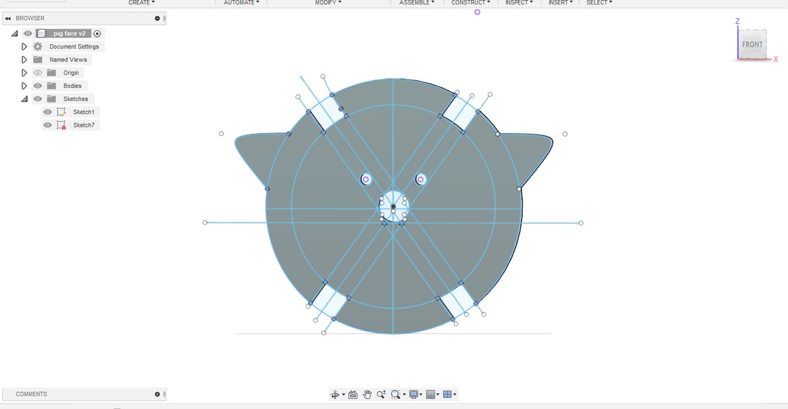
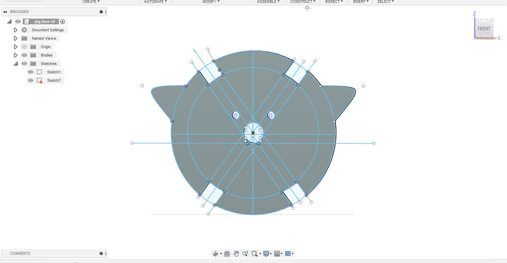
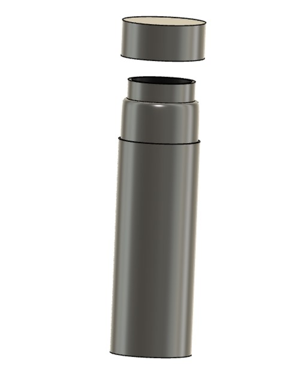
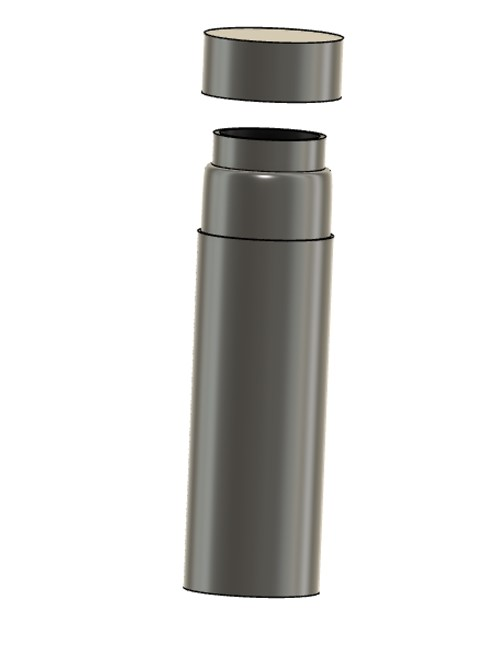

Week 2: 2D Design and Cutting
Fusion 360 Tutorial
This week we focused on using fusion 360 to create 2d models and using the laser cutter to print multiple iterations. In order to get comfortable with Fusion 360 I followed the tutorial page set up on the PS 70 website to make the following shape:
While the tutorial was relatively straight forward, I struggled first to understand the concept of kerf and how to incorporate it into the parameterization of my design. This was evident in my first iteration of my own assembly of a press-fit construction kit.
Press fit construction kit assembly
I decided to use concentric circles of different diameter for my press fit construction
kit. This was relatively easy to alter from my first design following the tutorial. At
first, I had some trouble saving the sketch as a file that would be read by the laser
cutting program. I was trying to save the sketch lines directly as a dxl file after
extruding the lines (as shown in the tutorial) but I realized that I needed to reproject
the sketch on a plane after extruding as shown:
To create the correct notch sizes I created parameters for both “halfwidth” (half of the width of cardboard using a caliper) and kerf. Once I imported it to the laser printer and printed my first iteration I found that my notches were way smaller than I had planned. This is because I was resizing my circle in the laser cutter software and was not accounting for how that how proportionally affect my notch sizes.
To allow for me to change my circle sizes easily without changing the notch size, I created parameters for the outer circle and inner circle. This worked well and my second iteration was much more of a success! However the notches were still slightly too big so I reduced the cardboard size by 0.2mm accounting for more crushed cardboard surface:
With the following parameters:
Success!
Pig
I wanted to apply my press-fit construction skills to make a cute animal puzzle that I had played with when I was a kid. I decided to take this(https://twohandspaperie.com/collections/craft-kits/products/jigzle-laser-cut-paper-miniature-puzzle-pig) pig as inspiration.
At first I thought I could print the above circles in the same way and simply add the frame (shown below):
However, I realized soon the the angle between the notches would be too wide for the pig to stand upright, so I had to edit all of the notch angles to 35 degrees. After playing around with the dimensions for each component and adding a face to my pig, here is my final result:
Things I would do differently
- Make notches closer together for frame so the pig would have more circles constituting its body
- Engrave the nose and eyes on the pig instead of cutting them out
- Dimensions still could be improved on the pig, I would like to take into account the angle of the arc of the pig frame next time.
3D drawings
In order to understand how to transform my work in Fusion 360 into 3D models I watched a few youtube videos. I concluded that there were two main ways to go about designing my models: revolving and extruding. While I was already familiar with extruding, I tried to extrude around a specified path to make a 3d mode but I found that revolving the shape was more appropriate in this case (unless I was making something like a donut shape).
For my first household item I decided to model was my water bottle. I thought this would be useful in case I decide to go with my second final project idea where I would 3d print a water bottle (that measures pH, turbidity, etc. of your water).
For this first modelling I took the revolve approach and only made a 2D side view as shown below:
While my first revolving attempt was successful, I had some difficulties extruding the top of the water bottle so that it would be empty. Fusion 360 kept asking me to choose a plane to extrude in and as a result kept cutting from the bottom of the water bottle. I fixed this by redrawing my sketch component by component, but I am still not quite sure what the error was.
After revolving successfully, I went back to add in my dimensions from
my caliper measurements. In hindsight I should have done this step first
considering that many of my added dimensions were “over constrained”
because I had already offset the lines and added curves to my drawings. To
fix this,I went back to a simple shape to add my dimensions and then added
in the more complicated components after. Here is the final result:
I then carried out the same process with my glasses but only used the extrude function. Here is the sketch before and after extruding. It was a lot harder to get accurate caliper measurements due to the shape of the glasses:
I could not figure out how to edit the temples of the glasses so that they were curved and had different thickness as shown in the real glasses.
Assembly Component
For the final assembly component of this week's assignment, I decided to separate the water bottle top and body into two separate sketches. Once I did this the process of assembling was straightforward: I inserted both drawings in a new file, and used the joint function to assemble as shown below:

 

 
